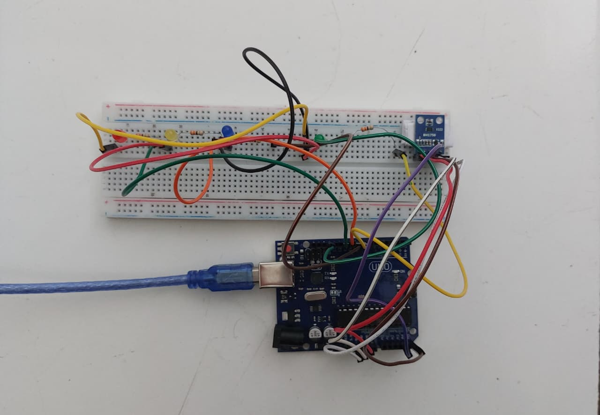

Simulasi Eye Strain akibat Paparan Cahaya
Data diperoleh dari sensor BH1750 dan ditampilkan sebagai simulasi edukasi
Data Sensor
Intensitas Cahaya
0
luxEstimasi jarak: -
Durasi Paparan: 0 menit
Eye Strain Index (ESI) 0.00-
Grafik ESI Real-time
*Simulasi ini bersifat edukatif dan bukan alat diagnosis medis.
Referensi Intensitas Cahaya (Lux)
| Pencahayaan (Lux) | Kondisi / Lingkungan |
|---|---|
| 0.0001 - 0.002 | Malam hari (Langit mendung/cerah tanpa bulan) |
| 20 - 50 | Tempat umum dengan lingkungan gelap |
| 80 - 100 | Lorong gedung / Kondisi mendung sangat gelap |
| 320 - 500 | Standar penerangan kantor / Ruang kerja |
| 1000 | Hari mendung / Pencahayaan studio TV |
| 10.000 - 25.000 | Siang hari (Tidak terkena matahari langsung) |
| 32.000 - 100.000 | Sinar matahari langsung |
Hasil Prototype Hardware
Integrasi Sensor BH1750 dengan Microcontroller Arduino

- Sensor BH1750: Mendeteksi intensitas cahaya secara presisi dalam satuan Lux.
- Proses AI: Data dikirim ke web untuk diprediksi menggunakan Machine Learning (kecerdasan buatan) model Random Forest.
- Feedback LED: Lampu pada alat akan berubah warna sesuai tingkat ESI di layar.